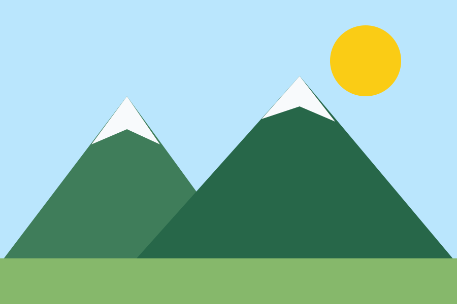
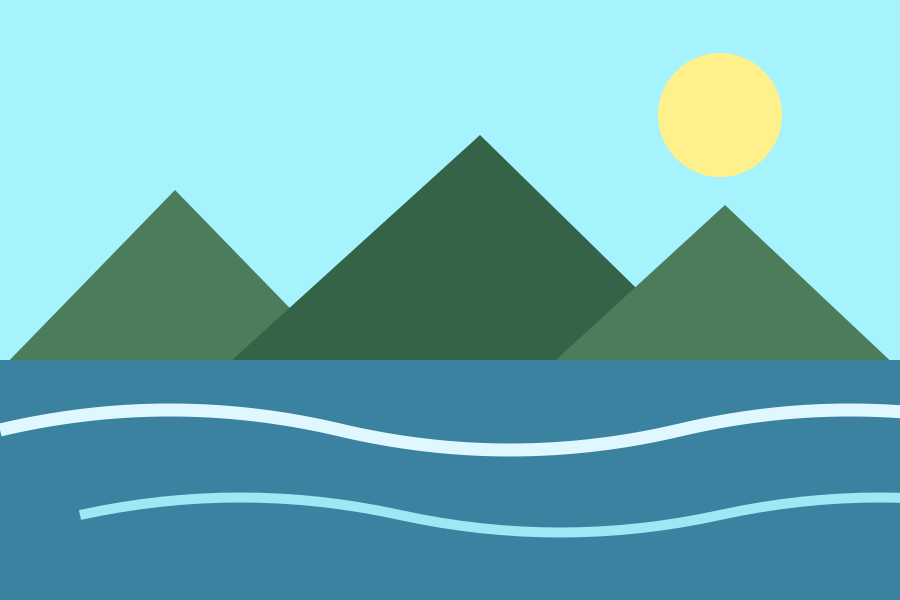
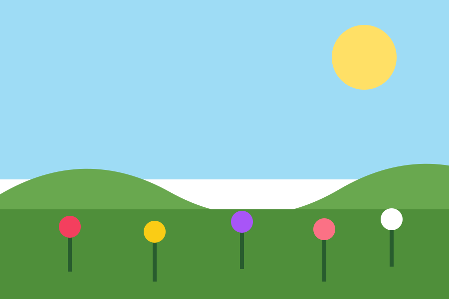
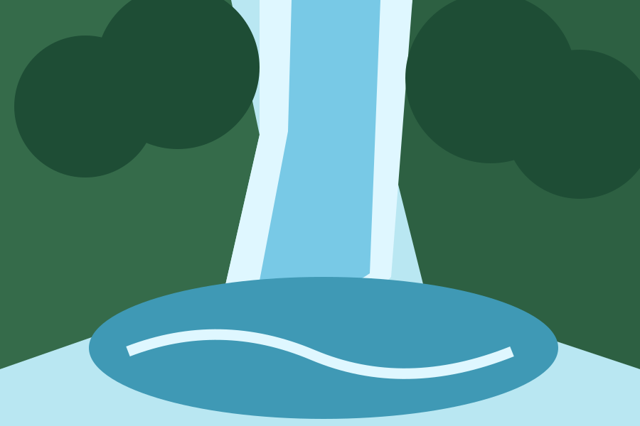

This gallery presents nine simple scenes from nature and everyday places, including beaches, mountains, forests, and cities.
Each image has a short caption and alternative text so visitors can understand the subject of every scene.





